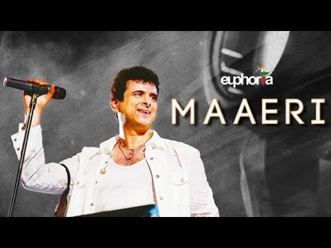

ARITIST
- Lead Vocals : Dr Palash Sen
- Composed by Dr Palash Sen
- Written by Dr Palash Sen & Jaideep Sahni
- Bass & Acoustic Guitar : DJ Bhaduri
- Tabla : Prashant Trivedi
- Dholak : Rakesh Bhardwaj
- coustic Guitar : Gaurav Misra
- Flute and Algoza : Ajay Prasanna
- Okoriko & percussions: Anurodh Jain
- Harmonium: Kajal Ghosh
- Back up vocals : Dj Bhaduri , Roy Menezes & Palash Sen
LYRICS
teriya meriya
bhull gaya
bhull gaya haar te jeet
hey mae ki karna mein jeet nu
hove naje meet
hove naje meet
bindiya lagati toh
kaapti thi palken maeri
chunniya sajake woh deti vaadein kalke maeri
meri haaton mein tha uska haath
thi chaashni si har uski baat
maeri aap hi hasdi
maeri aap hi rondi
maeri yaad woh yaad woh aaeri
galla kardi
maeri akha naal lardi
maeri yaad woh yaad woh aaeri
heyy maeri
baarishon mein lipat ke maa ati thi woh chalke maeri
deeriyan ho jaye to roti halke halke maeri
phir se mein royu phir woh gaye
thandi havayein banke chaye
maeri hira oh gandi, maeri gidde oh paundhi
maeri yaad woh yaad woh aaeri
jannata langdi maeri mannata mangdi
maeri yaad woh yaad woh aaeri
ab kya karun ka se kahun e maeri
ab kya karun kaaa se kahunn e maeri
duniya parayi chod ke aaja
jhoothe sare naate tod ke aaja
sau rabdi tujhe ek vari aaja
aab ke mile to honge na juda
na juda na juda aaa oooo
hun te oh aaye koi te le aaye
maeri yaad woh yaad woh aaeri
galla oh kardi
maeri akha naal lardi
maeri yaad woh yaad woh aaeri
bhul gayi mera pyar
mae bas lage mahine chaar
maeri yaad woh yaad woh aaeri
yaad woh aayi
maeri yaad woh aayi
maeri yaad woh yaad woh aaeri
ab kya karun ka se kahun e maeri
ab kya karun ka se kahunn e maeri
INFORMATIN